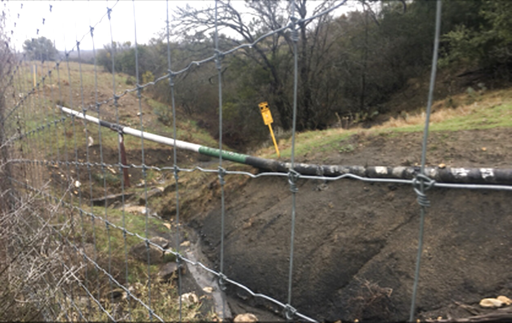
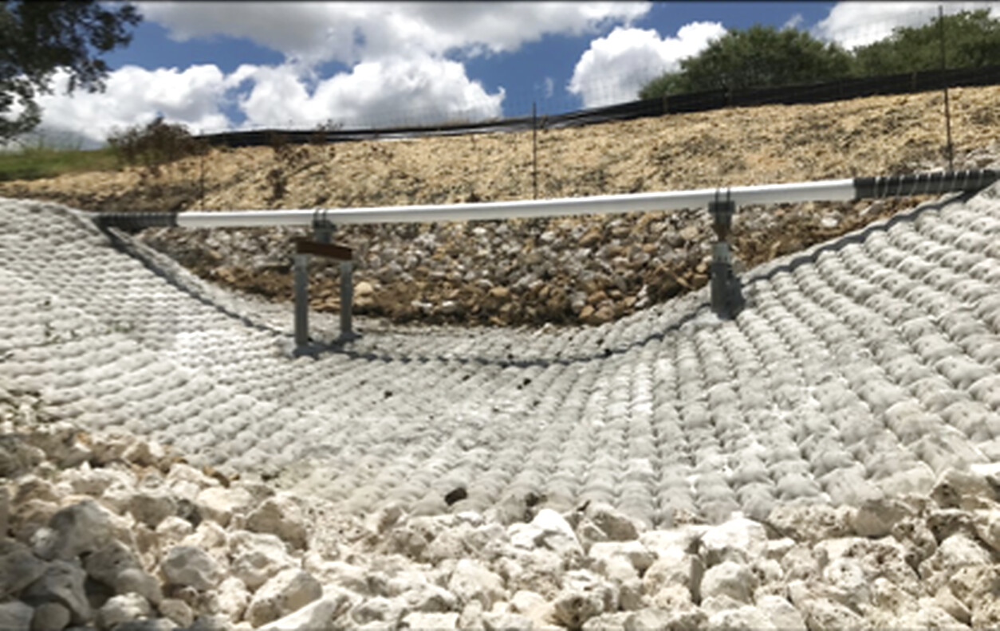
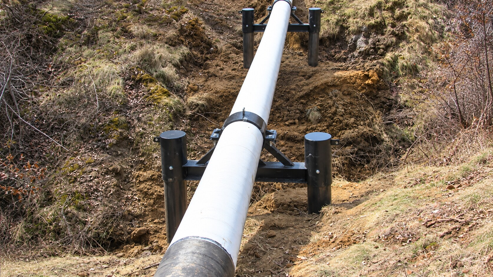
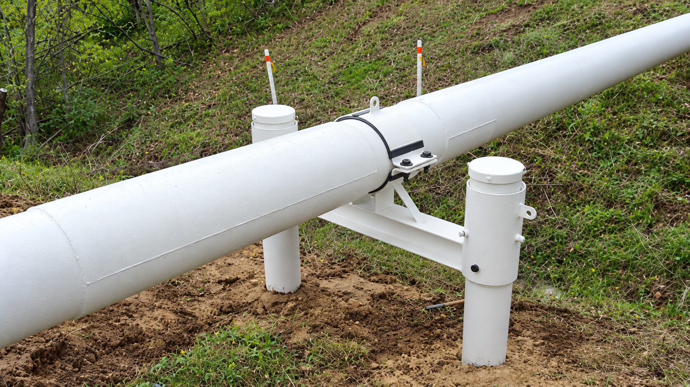
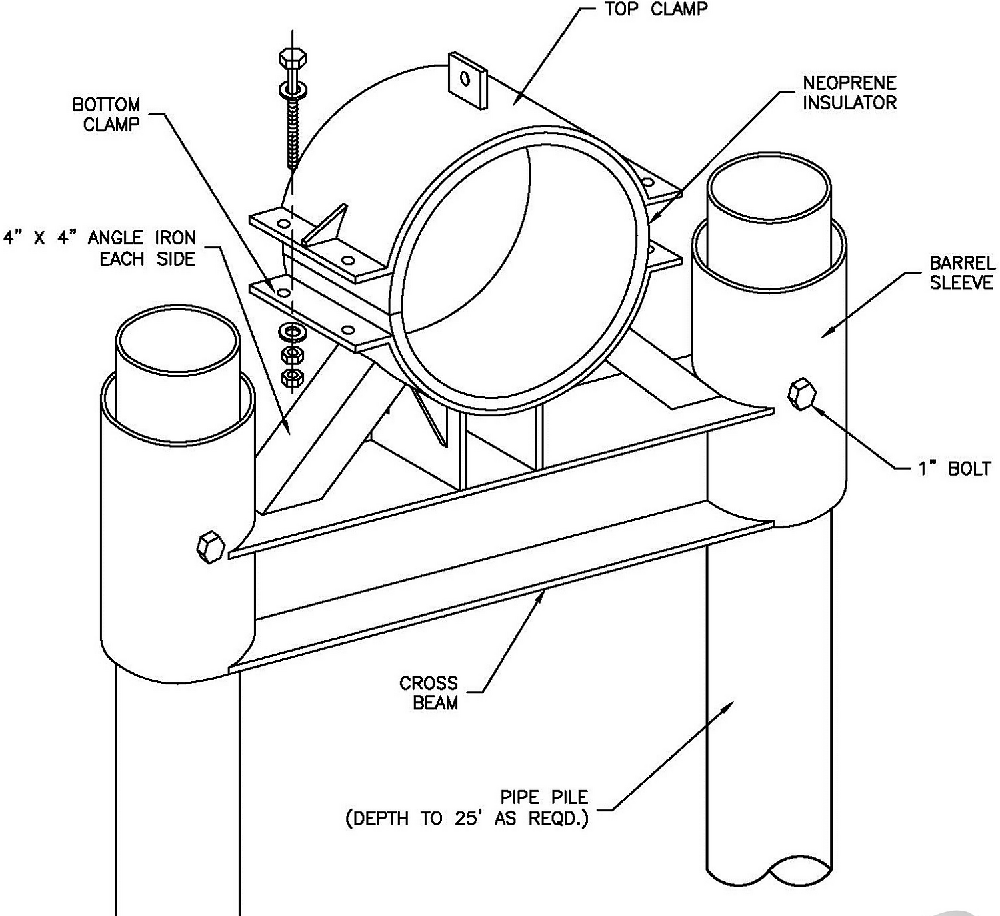

Exposed pipeline stabilization
Support the asset, then stabilize the site around it.
The completed work combines project-specific pipeline supports with channel and bank protection shaped around the crossing conditions.


Exposed Pipeline Stabilization
Stabilize the asset while the site is addressed.
Project-specific support systems for exposed or suspended pipelines where conventional cover is impractical, immediate stabilization is needed or crossing conditions have changed.
Discuss Your SitePipeline supports in the field
Pipeline exposure can leave an asset unsupported while erosion continues around it. Here, the supports stabilize the pipeline while the surrounding erosion-control system protects the crossing.
Exposed pipeline stabilization
The completed work combines project-specific pipeline supports with channel and bank protection shaped around the crossing conditions.


Stand-alone pipeline supports
Pipeline supports can also restore reliable support as a stand-alone solution. These completed applications show project-specific systems designed around the pipeline and conditions at each location.


How Pipeline Supports Work
Er-Con evaluates the pipeline, span, loads, water depth, access and the cause of the exposure before developing the support approach. Soil and subsurface conditions help determine whether the site can provide the piling depth required for long-term support.
Support locations, clamps and structural components are then engineered around the asset and the site. Where erosion remains active, the support system can be coordinated with bed, bank or channel protection so the response addresses more than the free span alone.

Document the pipe, free span, loads, alignment, access, active erosion and what caused the loss of support.
Evaluate soil and subsurface conditions, piling suitability and the depth needed to establish support.
Set support locations and design the clamps and structural components around the asset and site.
Place and verify the supports, then coordinate surrounding erosion protection where the conditions require it.
Evaluate the Entire Site
Supports can stabilize an exposed asset while the broader site response is developed.
Components are designed around the actual pipe diameter, loading and crossing geometry.
Pipeline supports can restore reliable support where broader stabilization work is not required.
Support design can be coordinated with bank stabilization, bed protection or future crossing work.
The goal is not an online diagnosis
If a pipeline is exposed, suspended or losing support, send us the location, pipe information, field photos and any available survey data. Er-Con will evaluate the immediate condition and help define the right next step.